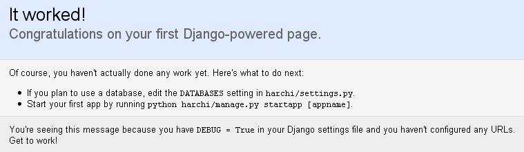

شروع کار با جنگو
به علت بخش های متحرک چندگانه در محیط های توسعه وب امروزی، نصب کردن جنگو یک پردازش چند مرحله ای می باشد. در این فصل، به نحوه نصب فریم ورک و وابستگی های آن می پردازیم.
از آن جهت که جنگو فقط کد پایتون می باشد، هرجایی که پایتون کار کند جنگو نیز کار خواهد کرد، که شامل برخی موبایل ها نیز می شود! اما این فصل تنها مراحل نصب جنگو را پوشش می دهد. فرض می کنیم شما در حال نصب آن روی یک دسکتاپ/نت بوک یا یک سرور هستید.
نصب کردن پایتون
خود جنگو از پایه با زبان پایتون نوشته شده است، بنابراین اولین قدم در نصب جنگو، نصب کردن پایتون بر روی سیستم می باشد.
نسخه های پایتون
هسته فریم ورک جنگو با نسخه های پایتون از 2.3 تا 2.7 کار می کند.
اگر شما مطمئن نیستید که از کدام نسخه از پایتون استفاده کنید، آخرین نسخه در سری 2 را انتخاب کنید. هر چند جنگو به خوبی با نسخههای 2.3 تا 2.7 کار می کند، آخرین نسخه از پایتون بهبودهایی در کارایی و همینطور خصوصیات اضافهتری دارد که ممکن است دوست داشته باشید در برنامهی خود استفاده کنید. بنابراین استفاده از آخرین نسخه پایتون شما را در انتخاب آزاد می گذارد.
|
|
جنگو و پایتون 3در زمان نوشتن این کتاب، پایتون 3.0 منتشر شده است، اما جنگو هنوز از آن پشتیبانی نمیکند. پایتون 3.0 تعدادی تغییرات اساسی دارد که باعث ناسازگاری آن با نسخههای قبلی شده است، در نتیجه ما انتظار کتابخانهها و فریم ورکهای بیشتر را داریم، از جمله جنگو که تا چند سال آینده آن را جبران خواهد کرد. اگر شما در یادگیری پایتون تازه کار هستید و نگران این هستید که آیا باید از پایتون 2 یا 3 شروع کنید، ما توصیه میکنیم که با پایتون 2 شروع کنید. |
مراحل نصب
اگر شما با سیستم عامل های لینوکس و یا مکینتاش کار می کنید، احتمالا پایتون را به صورت نصب شده در سیستم خود دارید. دستور python را در command prompt (یا در Applications/Utilities/Terminal) تایپ کنید. اگر شما چیزی شبیه به این مشاهده کردید، بنابراین پایتون نصب شده است.
Python 2.4.1 (#2, Mar 31 2005, 00:05:10) [GCC 3.3 20030304 (Apple Computer, Inc. build 1666)] on darwin Type "help", "copyright", "credits" or "license" for more information. >>>
در غیر اینصورت شما نیاز دارید تا پایتون را دانلود و نصب کنید. نصب آن بسیار آسان و سریع می باشد. همچنین دستورالعمل های نصب آن در آدرسhttp://www.python.org/download/ در دسترس می باشد.
در هر زمان دو نسخه متفاوت از جنگو در دسترس می باشد: آخرین نسخه رسمی و نسخه trunk. نسخهای که شما تصمیم به نصب آن دارید به اولیت شما بستگی دارد. آیا شما یک نسخه تست شده و پایدار از جنگو را می خواهید، یا یک نسخه که حاوی آخرین خصوصیات باشد، و شاید شما بتوانید جنگو را برای خودتان گسترش دهید؟
توصیه می کنیم با نسخه رسمی شروع کنید، اما شناختن و دانستن این که نسخه توسعه trunk وجود دارد نیز مهم است، زیرا شما با عضو شدن در انجمن توسعه جنگو می توانید با مستندات جنگو و ساختن آن آشنا شوید.
مراحل نصب انتشار رسمی جنگو
انتشارهای رسمی دارای شماره نسخه میباشند، همانند 1.0.3 یا 1.1، و آخرین نسخهی آن همیشه در این آدرس در دسترس است http://www.djangoproject.com/download/
اگر شما از یکی از توزیعهای لینوکس استفاده میکنید که شامل یک پکیج آماده از جنگو است، ایده خوبی است که از نسخه توزیعکننده استفاده کنید. در این روش، شما آپدیتهای امنیتی همراه با بقیه پکیجهای سیستم را خودکار دریافت خواهید کرد.
اگر شما به نسخه prepackaged دسترسی ندارید، میتوانید به صورت دستی آن را دانلود کرده و نصب کنید. برای انجام چنین کاری، ابتدا باید پرونده tarball را که معمولا نامی مشابه Django-1.0.2-final.tar.gz دارد را دانلود کنید، سپس آن را از حالت فشرده خارج کرده و در خط فرمان setup.py install را اجرا کنید.
نحوه عمل کردن در سیستم های یونیکس مشابه زیر است:
- tar xzvf Django-1.0.2-final.tar.gz
- cd Django-*
- sudo python setup.py install
در سیستم عامل ویندوز استفاده از 7-Zip (http://www.djangoproject.com/r/7zip/) را توصیه می کنیم. فایل را از حالت فشرده خارج کرده و محیط DOS (Command Promt) را با دسترسی مدیر باز کرده و درون پوشه ای که با نام Django-1.0 ... شروع میشود دستور زیر را وارد کنید:
python setup.py install
فایل های جنگو درون پوشه site-packages برای فایل های نصب شده پایتون نصب خواهند شد، معمولا در این آدرس قرار دارد.<br>usr/lib/python2.4/site-packages
نصب کردن نسخه Trunk
در دست تالیف ...
تست کردن نصب جنگو
بعد از نصب جنگو برای اینکه اطمینان حاصل کنید جنگو به درستی نصب شده و کار میکند، درون خط فرمان به شاخهی دیگری بروید (به طور مثال، شاخهای که شامل شاخهی django نباشد) و interactive interpreter پایتون را با تایپ کردن python اجرا کنید. اگر نصب با موفقیت انجام شده باشد، شما باید قادر به import کردن ماژول جنگو باشید:
>>> import django >>> django.VERSION (1, 1, 0, 'final', 1)
|
|
مثال های Interactive Interpreterinteractive interpreter پایتون یک برنامه خط فرمان است که به شما اجازه میدهد تا کدها و برنامههای پایتون را به صورت تعاملی بنویسید. برای شروع کار با آن، تنها کافی است دستور python را در خط فرمان اجرا کنید. در سرتاسر این کتاب، از بخش های interactive interpreter پایتون استفاده شده است. شما می توانید این مثال ها را با سه علامت بزرگتر (<<<) تشخیص دهید. اگر می خواهید این کدها را کپی کنید، نباید علامت های بزرگتر را انتخاب کنید. جملات چند خطی در interactive interpreter با استفاده از سه نقطه (...)، مشخص می شوند:
>>> print """This is a
... string that spans
... three lines."""
This is a
string that spans
three lines.
>>> def my_function(value):
... print value
>>> my_function('hello')
hello
این سه نقطه در شروع دستورات چند خطی بوسیله shell پایتون ایجاد می شوند، یعنی جزء بخش هایی نیست که ما وارد کرده باشیم. |
راه اندازی دیتابیس
در دست تالیف ...
آغاز یک پروژه
هنگامی که شما پایتون، جنگو و (به طور اختیاری) دیتابیس خود را نصب کردید، شما می توانید اولین گام را در توسعه یک برنامه جنگو، با ساختن یک پروژه بردارید.
یک پروژه مجموعه ای از تنظیمات برای یک نمونه از جنگو، شامل تنظیمات دیتابیس، گزینه های ویژه جنگو و برنامه ویژه تنظیمات می باشد.
اگر این اولین باری است که از جنگو استفاده می کنید، شما باید مراقب بعضی از تنظیمات اولیه باشید. یک پوشه جدید برای شروع کار بسازید، شاید چیزی شبیه به این/home/username/djcode/.
|
|
این پوشه باید کجا قرار بگیرداگر زمینه فکری شما PHP باشد، شاید درون document root سرور (جایی مانند /var/www) کد خود را قرار دهید. موقع کدنویسی با جنگو، این کار را انجام ندهید. این ایده خوبی نیست که هر کد پایتونی را داخل document root سرور قرار دهید، زیرا در این حالت این ریسک وجود دارد که امکان دارد بقیه قادر شوند کد خام شما را درون وب تماشا کنند و این خوب نیست. کد خود را در یک پوشه ای بیرون از document root قرار دهید. |
به مسیر پوشه ای که ساخته اید رفته، و دستور django-admin.py startproject mysite را اجرا کنید. دستور فوق پوشه mysite را درون پوشه ای که قرار دارید می سازد.
اگر شما پیام "permission denied" را هنگام اجرا کردن django-admin.py startproject مشاهده کردید، شما نیاز خواهید داشت حق دسترسی فایل را تغییر دهید. برای این منظور، به پوشه ای که django-admin.py در آن نصب شده است رفته (مانند /usr/local/bin) و دستور chmod +x django-admin.py را اجرا کنید.
دستور startproject یک پوشه حاوی چهار فایل می سازد:
mysite/ __init__.py manage.py settings.py urls.py
توضیح فایل های بالا در زیر آمده است:
- __init__.py: یک فایل مورد نیاز پایتون می باشد که توسط آن پوشه mysite یک پکیج تلقی می شود. همچنین فایل فوق یک فایل خالی می باشد، و معمولا شما هیچ چیزی درون آن اضافه نخواهید کرد.
- manage.py: یک مزیت خط فرمان می باشد که به شما اجازه می دهد با این پروژه جنگو در روش های مختلف در تعامل باشید. دستور python manage.py help را تایپ کنید تا آنچه را که می توانید با این فایل انجام دهید را مشاهده کنید. شما نباید هرگز این فایل را ویرایش یا دستکاری کنید این فایل صرفا برای راحتی کار در این پوشه ساخته شده است.
- settings.py: تنظیمات/پیکربندی برای پروژه جنگو می باشد. نگاهی به آن بیاندازید تا تنظیمات در دسترس، به همراه مقادیر پیشفرض آن را مشاهده کنید.
- urls.py: URL ها برای پروژه جنگو. برای لحظاتی فکر کنید فهرست مطالب سایت شما خالی باشد.با وجود حجم کم، این فایل ها کارکرد برنامه جنگو را تشکیل می دهند.
با وجود حجم کم، این فایل ها کارکرد برنامه جنگو را تشکیل می دهند.
اجرا کردن سرور
سرور جنگو (همچنین runserver هم نامیده می شود بعد از دستور راه اندازی آن) یک سرور سبک و داخلی جنگو می باشد که شما می توانید با استفاده از آن سایت خود را توسعه دهید. با استفاده از این سرور شما می تونید به سرعت سایت خود را توسعه دهید، بدون سر و کارداشتن با تنظیمات سرور (مانند Apache) تا زمانی که شما آماده شوید برای راه اندازی سایت. این سرور به طور اتوماتیک هنگامی که شما در کد خود تغییر ایجاد می کنید آن تغییرات را در خودش بروز سازی می کند بدون اینکه شما نیازی به راه اندازی مجدد آن پیدا کنید.
برای اجرا کردن سرور، به درون پوشه پروژه رفته (cd mysite)، و دستور زیر را اجرا کنید:
python manage.py runserver
شما چیزی شبیه به این خواهید دید:
Validating models... 0 errors found. Django version 1.0, using settings 'mysite.settings' Development server is running at http://127.0.0.1:8000/ Quit the server with CONTROL-C.
دستور بالا سرور را به صورت داخلی روی پورت 8000 راه اندازی می کند، که تنها بر روی رایانه شما قابل دسترس خواهد بود. حالا که سرور در حال اجراست، مسیر http://127.0.0.1:8000/ را روی مرورگر خود مشاهده کنید. شما یک صفحه مانند شکل 1-2 مشاهده خواهید کرد.
|
|
شکل 1-2 |
|  | |
در پایان، نکته مهمی که درباره سرور خود جنگو می باشد را بیان می کنیم، اگر چه این سرور برای توسعه مناسب می باشد، ولی در یک زمان تنها می تواند یک درخواست (request) جواب گو باشد، و همچنین از نظر امنیتی نیز کامل نیست. اطلاعات بیشتر در مورد این موضوع در فصل دوازدهم بیان شده است.
|
|
تغییر دادن هاست یا پورتبه طور پیشفرض، دستور runserver سرور را روی پورت 8000 اجرا می کند، که تنها برای اتصالات محلی می باشد. اگر پورت سرور را تغییر دهید، آنرا به صورت آرگومان به خط فرمان ارسال کنید. python manage.py runserver 8080 با تعیین آدرس IP، شما می توانید به سرور بگویید تا به اتصالات غیر محلی (non-local) اجازه اتصال دهد. این بویژه زمانی مفید خواهد بود که شما بخواهید سایت را با دیگر اعضای تیم خود به اشتراک بگذارید. IP آدرس 0.0.0.0 به سرور می گوید به هر رابط شبکه گوش کن: python manage.py runserver 0.0.0.0:8000 هنگامی که شما دستور فوق را اجرا کنید، رایانه های دیگر در شبکه محلی شما قادر خواهند بود سایت جنگوی شما را با آدرس IP شما در مرورگر خود تماشا کنند، مانند http://192.168.1.103:8000/. (نکته این که شما باید تنظیمات شبکه خودتان را برای تعیین آدرس IP خودتان روی شبکه محلی داشته باشید. کاربران یونیکس، باید سعی کنند ifconfig را در یک خط فرمان برای گرفتن اطلاعات اجرا کنند. کاربران ویندوز باید با دستور ipconfig این کار را انجام دهند.) |
گام بعدی
حالا که شما همه چیز را در مورد نصب و اجرا کردن سرور می دانید، دیگر برای یادگیری قواعد ساختن صفحات وب با جنگو آماده شده اید.